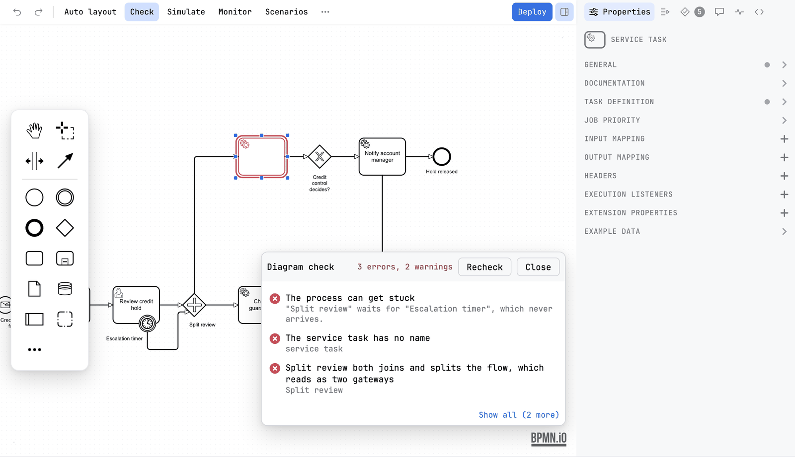
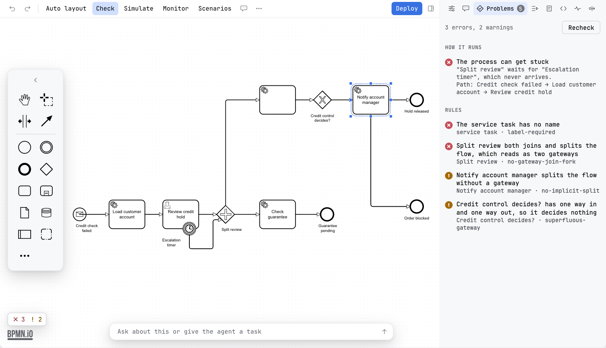
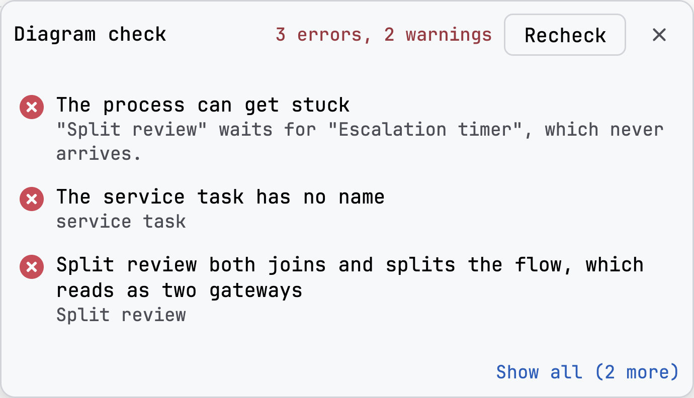
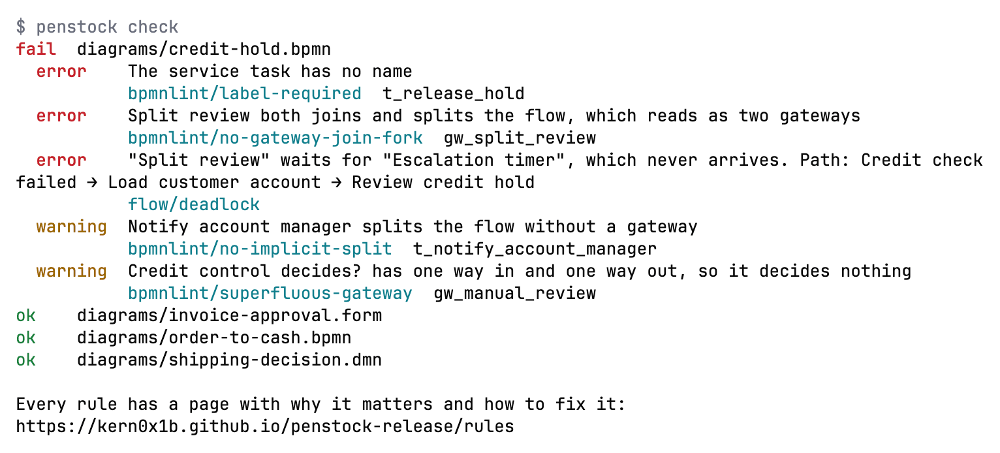

Guide / Checking
Diagram check
The check lists everything wrong with your diagram, points at each problem on the canvas, and says why it matters and how to fix it.
Run it
- Press Check on the toolbar. A card called Diagram check opens at the bottom right of the canvas, over it rather than under it.
- Read the header. It counts the findings in words and how many are notes about readability, for example 8 errors, 1 warning, 1 readability.
- Click a line. The canvas scrolls to that element and selects it, and its outline turns red.
- Press Show all to open the Problems tab, where every finding is. Click a finding there and its Why and Fix lines open under it, with a link to that check's own page.
- Fix the problem. The check runs again by itself a moment after you stop editing. Recheck forces a new pass. Close, or pressing Check again, puts the card and the outlines away.

The check starts as soon as a diagram is read and runs again as you edit, whether or not the card or the tab is open. That is why the count is always on the canvas and always the same number.
Two places to read it
You can choose the Problems tab of the sidebar directly, without the card. The Check button stays pressed while either one is showing. Opening the tab puts the card away, since the tab says everything the card does.
| The card | The Problems tab | |
|---|---|---|
| Where | Over the canvas, at the bottom right. | In the sidebar, beside the diagram. |
| What it lists | The first three findings, and Show all with how many more there are. | Every finding, in groups, each with an error or a warning icon. |
| Why and Fix | No. | Yes, under the finding you select, with the rule's id and a link to its page. |
| Buttons | Recheck, Close, Show all. | Recheck, and the count line at the top. |
| Stays | Until you close it. | While you look at another tab. Go to Properties to fix something and come back to the same list. |
Clicking a finding in either place selects its element on the canvas and opens the property that fixes it: job type, form key or id, correlation key, history time to live, called element, error, escalation, message and signal references and timer definitions, and a missing job type, topic, class or delegate expression in the code. A finding with no single field still switches the sidebar to Properties and selects the element. Resting the pointer on a drawing finding in the tab shows its element on the canvas without selecting it.


What you see
While the card is open, every element that a problem is about carries an outline on the canvas. A small pill at the bottom of the canvas says the same as the header of the card, in the same words. It is green when nothing is wrong, amber for warnings and red for errors. The badge on the Problems tab carries the number of errors and warnings. The pill is hidden while the card is open, since the card says the same thing, and both count the same findings: a compatibility rule the linter reports as information counts as a warning, and a problem two checks both report is counted once.
With nothing wrong, the pill says No problems found. In the Problems tab the same words are the heading, with Nothing to report across N elements and connections. The check runs again as you edit. under it. Until the first pass is done the tab says Waiting for a diagram to check.
Every check has an id
Each check has a stable id, such as drawing/overlap, bpmnlint/label-required or form/key-clash, a line on why it matters and a line on how to fix it. The same id travels with the finding everywhere else it is reported: penstock check --format json, SARIF and GitHub annotations all carry the id and the address of its page, so a finding in a pull request leads back to the same page the editor showed.
The catalogue is generated from the rule definitions, so an id never changes meaning. Every check has its own page under Every rule, grouped by what it is about, and you can read them all without opening a diagram.
The groups
The Problems tab groups findings by what they are about, in this order. A group only appears when it has something to say.
| Group | What it lists | Needs |
|---|---|---|
| How it runs | Problems in how the process runs: it can get stuck, a part runs twice, a step can never run, it may never finish, a decision has no way out. Selecting one outlines the path that leads there and writes it in words, as Path: Start → Which way → Task A. See Flow analysis. | Pro |
| Drawing | Drawing defects that make a diagram wrong: shapes on top of each other, a connection through a shape, a connection that does not reach its element, an element outside its pool, a boundary event off its host, labels covering each other, a connection that doubles back along itself. | Free |
| Engine | A diagram whose namespace is not the one of the engine of the project, for example This is an Operaton project, but the diagram uses the Camunda 7 namespace. The row has a Fix button that converts the namespace. | Free |
| Code | Where the diagram and your code disagree: a task nothing implements, a variable read under a name that is set a letter away, a called process no diagram defines, a form no file provides. Each finding has the file and the line. See Code links. | Pro |
| Rules | What bpmnlint reports, with your .bpmnlintrc or, when there is none, bpmnlint:recommended, and the engine compatibility findings, whose ids start with compat/: a service task with no job type, an element or an expression the chosen version cannot run, a process with no history time to live. Each line has the message, the element and the rule name. See Validation. | Free |
| Migrate to Camunda 8 | What does not carry over, in a Camunda 7, Operaton or CIB seven diagram, with a Convert button. See Camunda 7 to 8. | Free to look, Convert is Pro |
| Readability | Collapsed by default, with its count on the heading. Crossings, lines on top of each other, detours, diagonal segments, a label adrift from what it names. A hand-drawn diagram always has some, so zero is not the goal. Open it when a diagram is hard to follow. | Free |
Without Pro, the flow group is one row that says how many such problems it found and offers to buy it. The same analysis is the flow section of penstock check, or penstock check --only flow on its own.
Drawing and rules are different
The drawing checks answer "can the diagram be read?". They know nothing about the process. bpmnlint answers "is the process modelled correctly?". They never report the same thing twice.
Problems outside the editor
Where the findings appear outside the editor is up to your tool. Some put them in their own problem list, and mark the file itself.
Problems outside the editor
JetBrains
The findings are in the IDE's own Problems window, and a file with findings is marked in the project view. The inspection is Diagram findings from the check, in the group Penstock of Settings | Editor | Inspections. Code | Inspect Code runs it too, and it can be turned off there; the findings stay in the editor either way.
Command line
Not available on the command line. The command line has no IDE window. penstock check reports the same findings, and they carry the same ids and the same rule pages, so a finding in a build log leads to the same page.
VS Code
The findings of the Check card stay in the editor. VS Code's Problems view carries only what penstock code reports, a step nothing runs or a worker no diagram uses, and only with Pro. A file with findings is not marked in the Explorer. See Where things are in VS Code.
Check the whole project
The card checks the diagram you have open. The same checks also run over every diagram, decision and form of a project at once, and their findings carry the same rule ids. Only errors make a whole-project check fail. A warning is shown as a note.

Check from your tool
JetBrains
Press Check on the editor's toolbar for the diagram you have open. For a whole project, right-click a file or a folder in the Penstock tool window and choose Run Penstock | Check. The report opens in the Run window. It runs only in a trusted project.
Command line
$ penstock check .
ok src/main/resources/approve-order.form
fail src/main/resources/order-process.bpmn
OVERLAP: approve_order <-> charge_card
DETACHED-EDGE: Flow_1 (order_received->approve_order)
note bpmnlint/no-overlapping-elements: Element overlaps with other element (approve_order)
ok src/main/resources/shipping-method.dmn
Every rule has a page with why it matters and how to fix it: https://kern0x1b.github.io/penstock-release/rulesA line that starts with note is a warning. Only errors make the command exit with 1. See Every command.
VS Code
Press Check on the toolbar of the editor, or run Penstock: Check in the Command Palette, for the diagram you have open. There is no action for a whole project in VS Code. Use penstock check . on the command line.
Fix a whole diagram at once
If the list is long because the diagram drifted, Auto layout is usually faster than fixing line by line. The check measures. Auto layout draws a diagram that passes.
What it cannot see
Three measures need the file rather than the canvas: a connection declared in the XML that was never drawn, a connection with an end missing, and a comparison of what the diagram meant before an operation against after. The check leaves those out instead of reporting them as passing. A diagram that cannot be read shows a screen of its own rather than a card: what the parser objected to, the line it objected on, that the file was not changed, and buttons to open the XML in the Text tab at that line and to Reload.
Common problems
- The card says "The bpmnlint rules could not run".
- Your
.bpmnlintrcuses rules from a plugin. The editor needs those rules in a bundle. See Validation. - I fixed a problem and it is still listed.
- Press Recheck. The list refreshes a moment after you stop editing.
- The count in the header is lower than the list.
- The card lists only its first three findings, and Show all opens the rest. The badge on the Problems tab counts errors and warnings but not the notes about readability, which the header counts apart. A rule set to warn is a warning rather than an error.
- The pill says "No problems found." but I see something wrong.
- The check reads the drawing, the rules and, with Pro, the flow and the code. A wrong value in a field, or a mistake it has no rule for, is not a finding. See Validation for the rules that run.
- There is no Check button.
- It may have been moved off the bar. Open More and pin Check. See The toolbar and the More menu.